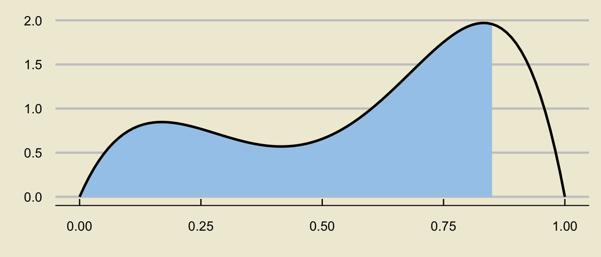

1.9599639845400545PSTAT 5A: Lecture 14
Review for Midterm 2
Ethan P. Marzban
5/18/23
Hypothesis Testing
Hypothesis Testing
Recall that in the framework of hypothesis testing, we wish to utilize data to assess the plausibility/validity of a hypothesis, called the null hypothesis.
- Specifically, we wish to determine whether or not the data provides support to reject the null in favor of the alternative hypothesis or not.
In the case of hypothesis testing for a population proportion \(p\), our null takes the form \(H_0: p = p_0\) and there are several different alternative hypotheses we could consider:
- Two-tailed alternative/test: \(H_A: \ p \neq p_0\)
- Lower-tailed alternative/test: \(H_A: \ p < p_0\)
- Upper-tailed alternative/test: \(H_A: \ p > p_0\)
- Simple-vs-simple alternative/test: \(H_A: \ p = p_1\) for \(p_1 \neq p_0\)
Hypothesis Testing for a Proportion
The different alternative hypotheses lead to different forms of our hypothesis test.
Last lecture, we discussed how to construct a two-sided hypothesis test.
On the homework, I ask you to derive the lower-tailed hypothesis test, and I also provide you with the form for an upper-tailed hypothesis test.
To help you with Problem 1 on the upcoming homework, allow me to re-do the derivations we did last lecture, but this time more in the style of Problem 1 on HW01.
Two-Sided Test for a Proportion
We start with the test statistic \[ \mathrm{TS} = \frac{\widehat{P} - p_0}{\sqrt{\frac{p_0 (1 - p_0)}{n}}} \]
If the null were true, i.e. if the true value of \(p\) were \(p_0\), then this test statistic would follow the Normal Distribution provided we are able to invoke the Central Limit Theorem for proportions, which we can do only if
- \(np_0 \geq 10\)
- \(n(1 - p_0) \geq 10\)
Two-Sided Test for a Proportion
- If these conditions hold, we then know that (by the Central Limit Theorem for Proportions) \[ \widehat{P} \stackrel{H_0}{\sim} \mathcal{N}\left( p_0, \ \sqrt{\frac{p_0 (1 - p_0)}{n}} \right) \] which means, by our Standardization Result, that \[\mathrm{TS} \stackrel{H_0}{\sim} \mathcal{N}(0, \ 1)\]
Two-Sided Test for a Proportion
Now, let’s think about when we would reject the null that \(p = p_0\) in favor of the alternative that \(p \neq p_0\).
If we observed a value of \(\widehat{p}\) that was much greater than \(p_0\) (i.e. if \(\mathrm{TS}\) was much larger than 0), we would probably reject the null in favor of the alternative.
But, if we observed a value of \(\widehat{p}\) that was much smaller than \(p_0\) (i.e. if \(\mathrm{TS}\) was much smaller than 0), we would probably also reject the null in favor of the alternative.
Therefore, we reject when the magnitude of \(\mathrm{TS}\) is large; i.e. with \(|\mathrm{TS}| > c\) for some constant \(c\).
This means our test should take the form \[ \texttt{decision}(\mathrm{TS}) = \begin{cases} \texttt{reject } H_0 & \text{if } |\mathrm{TS}| > c \\ \texttt{fail to reject } H_0 & \text{otherwise}\\ \end{cases} \]
Two-Sided Test for a Proportion
Finally, we need to consider how large to make our cutoff (or critical value) \(c\).
This is where we need to consider the two types of errors we could commit: Type I and Type II Errors
Type I error: the null was rejected when it was in fact true (convicting an innocent person)
Type II error: the null was not rejected when it was in fact false (letting a guilty person go free)
We call the probability of committing a Type I error the level of significance \(\alpha\), which we fix before beginning our testing procedure.
In terms of the critical value, this means \(c\) should satisfy the equation \[ \mathbb{P}_{H_0}(|\mathrm{TS}| > c) = \alpha \] where \(\mathbb{P}_{H_0}\) means “probability of, assuming the null is actually true (i.e. that \(p = p_0\))”.
Two-Sided Test for a Proportion
Since we know that \(\mathrm{TS}\) follows a standard normal distribution under the null, this means that \(c\) should be the \((\alpha / 2) \times 100\)th percentile of the standard normal distribution.
- For example, if \(\alpha = 0.05\), then the critical value is the \((0.05) / 2 \times 100 = 2.5\)th percentile of the standard normal distribution, which we see to be \(1.96\).
As such, the final form of our test is \[ \texttt{decision}(\mathrm{TS}) = \begin{cases} \texttt{reject } H_0 & \text{if } |\mathrm{TS}| > z_{1 - \alpha/2} \\ \texttt{fail to reject } H_0 & \text{otherwise}\\ \end{cases} \] where we can use the notation \(z_{1 - \alpha/2}\) to denote the \((\alpha / 2) \times 100\)th percentile of the standard normal distribution, scaled by negative 1.
Quick Note
- It turns out that the \((\alpha / 2) \times 100\)th percentile of the standard normal distribution scaled by negative 1 is equivalent to the \((1 - \alpha / 2)\)th percentile of the standard normal distribution, not scaled by negative 1.
- Basically, when doing a two-sided test, ensure that the critical value is positive.
Worked-Out Example
Worked-Out Example 1
Administration within a Statistics department at an unnamed university claims to admit 24% of all applicants. A disgruntled student, dubious of the administration’s claims, takes a representative sample of 120 students who applied to the Statistics major, and found that 20% of these students were actually admitted into the major.
Conduct a two-sided hypothesis test at a 5% level of significance on the administrator’s claims that 24% of applicants into the Statistics major are admitted. Be sure you phrase your conclusion clearly, and in the context of the problem.
Solutions
We first phrase the hypotheses.
Let \(p\) denote the true proportion of applicants who get admitted into the major. Since we are performing a two-sided test, our hypotheses take the form \[ \left[ \begin{array}{rr} H_0: p = 0.24 \\ H_A: p \neq 0.24 \end{array} \right.\]
Now we compute the value of the test statistic: \[ \mathrm{TS} = \frac{\widehat{p} - p_0}{\sqrt{\frac{p_0(1 - p_0)}{n}}} = \frac{0.2 - 0.24}{\sqrt{\frac{(0.24) \cdot (1 - 0.24)}{120}}} \approx -1.026 \]
Next, we compute the critical value. Since we are using an \(\alpha = 0.05\) level of significance, we will use the critical value \(1.96\)
Solutions
Finally, we perform the test: we will reject the null in favor of the alternative if \(|\mathrm{TS}|\) is larger than the critical value.
In this case, \(|\mathrm{TS}| = |-1.026| = 1.026 < 1.96\) meaning we fail to reject the null:
At an \(\alpha = 0.05\) level of significance, there was insufficient evidence to reject the null hypothesis that 24% of applicants are admitted into the major as opposed to the alternative that the true admittance rate was not 24%.
Random Variables
Basics of Random Variables
Recall long ago we discussed the notion of an experiment: any procedure we can repeat an infinite number of times where each time we repeat the experiment the same fixed set of things (i.e. the outcomes) can occur.
A random variable, loosely speaking, is some sort of numerical variable that keeps track of certain quantities relating to an experiment.
For example, if we toss 7 coins and let \(X\) denote the number of heads we observe in these 7 coin tosses, then \(X\) would be a random variable.
The set of all values a random variable can attain is called the state space, and is denoted \(S_X\).
We classify random variables based on their state space:
- If \(S_X\) has jumps, we say \(X\) is a discrete random variable
- If \(S_X\) does not have jumps, we say \(X\) is a continuous random variable
Discrete Random Variables
Discrete random variables are described/summarized by a probability mass function (p.m.f.), which is a specification of the values the random variable can take (i.e. the state space) along with the probabilities with which the random variable attains those values.
P.M.F.’s are often displayed in tabular form: e.g. \[ \begin{array}{r|cccc} \boldsymbol{k} & -1 & 0 & 1 & 2 \\ \hline \boldsymbol{\mathbb{P}(X = k)} & 0.1 & 0.2 & 0.3 & 0.4 \end{array}\]
Note that the probability values in a P.M.F. must sum to 1.
Quantities like \(\mathbb{P}(X \leq k)\) are found by summing up the values of \(\mathbb{P}(X = x)\) for all values of \(x\) in the state space that are less than \(k\).
- For example, in the example above, \[\mathbb{P}(X \leq 0.5) = \mathbb{P}(X = -1) + \mathbb{P}(X = 0) = 0.1 + 0.2 = 0.3 \]
Expected Value
The expected value of a random variable \(X\), denoted \(\mathbb{E}[X]\), represents a sort of “average” of \(X\), and is computed as \[ \mathbb{E}[X] = \sum_{\text{all $k$}} k \cdot \mathbb{P}(X = k) \]
Again, don’t be scared by the sigma notation! It just represents a sum.
So, for example, using our P.M.F. from the previous slide, \[\begin{align*} \mathbb{E}[X] & = (-1) \cdot \mathbb{P}(X = -1) + (0) \cdot \mathbb{P}(X = 0) \\ & \hspace{10mm} + (1) \cdot \mathbb{P}(X = 1) + (2) \cdot \mathbb{P}(X = 2) \\[3mm] & = (-1) \cdot (0.1) + (0) \cdot (0.2) + (1) \cdot (0.3) + (2) \cdot (0.4) \\[3mm] & = \boxed{1} \end{align*}\]
Variance and Standard Deviation
There are two formulas we can use for the variance of a random variable \(X\): \[ \mathrm{Var}(X) = \sum_{\text{all $k$}} (k - \mathbb{E}[X])^2 \cdot \mathbb{P}(X = k) \] or \[ \mathrm{Var}(X) = \left(\sum_{\text{all $k$}} k^2 \cdot \mathbb{P}(X = k) \right) - (\mathbb{E}[X])^2 \]
The standard deviation of a random variable is simply the square root of the variance: \[ \mathrm{SD}(X) = \sqrt{\mathrm{Var}(X)} \]
Variance and Standard Deviation
- For example, using the PMF from a few slides ago, the first formula for variance tells us to compute \[\begin{align*} \mathrm{Var}(X) & = \sum_{\text{all $k$}} (k - \mathbb{E}[X])^2 \cdot \mathbb{P}(X = k) \\ & = (-1 - 1)^2 \cdot \mathbb{P}(X = -1) + (0 - 1)^2 \cdot \mathbb{P}(X = 0) \\ & \hspace{10mm} + (1 - 1)^2 \cdot \mathbb{P}(X = 1) + (2 - 1)^2 \cdot \mathbb{P}(X = 2) \\[3mm] & = (-1 - 1)^2 \cdot (0.1) + (0 - 1)^2 \cdot (0.2) \\ & \hspace{10mm}+ (1 - 1)^2 \cdot (0.3) + (2 - 1)^2 \cdot (0.4) \\[3mm] & = \boxed{1} \end{align*}\]
Variance and Standard Deviation
- Using the second formula for variance, we first compute \[\begin{align*} \sum_{\text{all $k$}} k^2 \mathbb{P}(X = k) & = (-1)^2 \cdot \mathbb{P}(X = -1) + (0)^2 \cdot \mathbb{P}(X = 0) \\ & \hspace{10mm} + (1)^2 \cdot \mathbb{P}(X = 1) + (2 - 1)^2 \cdot \mathbb{P}(X = 2) \\[3mm] & = (-1)^2 \cdot (0.1) + (0)^2 \cdot (0.2) \\ & \hspace{10mm}+ (1)^2 \cdot (0.3) + (2)^2 \cdot (0.4) \\[3mm] & = 2 \end{align*}\] which means \[ \mathrm{Var}(X) = 2 - (1)^2 = \boxed{1}\]
Binomial Distribution
Suppose we have \(n\) independent trials, each resulting in “success” with probability \(p\) and “failure” with probability \(1 - p\). If \(X\) denotes the number of successes in these \(n\) trials, we say \(X\) follow the Binomial distribution with parameters \(n\) and \(p\), notated \[ X \sim \mathrm{Bin}(n, \ p) \]
If \(X \sim \mathrm{Bin}(n, \ p)\), then:
- \(S_X = \{0, 1, 2, \cdots, n\}\)
- \(\mathbb{P}(X = k) = \binom{n}{k} p^k (1 - p)^{n - k}\)
- \(\mathbb{E}[X] = np\)
- \(\mathrm{Var}(X) = np(1 - p)\)
Binomial Distribution
In order to verify that the Binomial distribution is appropriate to use, we need to check the Binomial Criteria:
- Independence across trials
- Fixed number \(n\) of trials
- Well-defined notion of “success” and “failure”
- Fixed probability \(p\) of success across trials.
If you are going to use the Binomial distribution in a problem, you must check all four of these!
Case Study: Airline Bookings
Worked-Out Example
Worked-Out Example 2
Suppose that GauchoAir has found that each passenger that books a ticket on the GA5A flight from SBA to GCV (GauchoVille) actually shows up with probability 90%.
If flight GA5A has only 186 seats, but sells 195 tickets, what is the probability that GauchoAir will need to re-book certain passengers?
Solution
As always, we start by defining quantities.
Let \(X\) denote the number of passengers, out of the 195 booked on the flight, that actually show up for the flight.
The video claims that \(X\) follows a Binomial Distribution- let’s work with that claim for a moment (and then we can revisit that assumption later).
Specifically, \(X \sim \mathrm{Bin}(195, \ 90)\).
Now, the airline will only need to re-book passengers when the number of passengers that arive (\(X\)) exceeds the capacity of the plane (186).
So, the quantity we seek is \(\mathbb{P}(X > 186) = \mathbb{P}(X \geq 187)\).
Though we could do this by hand, let’s use Python.
We can also discuss whether we think the Binomial critera really are satisfied in this case or not.
Geometric Distribution
Another distribution we encountered (this time in Discussion Section) is the so-called Geometric Distribution.
If \(X\) counts the number of trials (including the final trial) until we observe our first “success”, and if each trial results in a “success” with probability \(p\), then \(X\) is said to follow the Geometric distribution with parameter \(p\): \[ X \sim \mathrm{Geom}(p) \]
If \(X \sim \mathrm{Geom}(p)\), we have:
- \(S_X = \{1, 2, 3, \cdots \}\)
- \(\mathbb{P}(X = k) = (1 - p)^{k - 1} \cdot p\)
- \(\mathbb{E}[X] = \frac{1}{p}\)
- \(\mathrm{Var}(X) = \frac{1 - p}{p^2}\) (wasn’t explicitly mentioned before, but it’s good to know!)
Continuous Random Variables
- Not all random variables are discrete- many are continuous!
- Continuous random variables are characterized by a probability density function (pdf) \(f_X(x)\), which must obey the following two properties:
- \(f_X(x)\) must be nonnegative everywhere
- The area underneath the graph of \(f_X(x)\) must be 1
- The graph of a pdf is called a density curve
- Probabilities are found as areas underneath the density curve.
Areas Under the Density Curve
- For example, the area above represents \(\mathbb{P}(0.25 \leq X \leq 0.75)\).
Uniform Distribution
An specific example of a continuous distribution is the Uniform distribution with parameters \(a\) and \(b\): \(X \sim \mathrm{Unif}(a, \ b)\).
The p.d.f. is given by \[ f_X(x) = \begin{cases} \frac{1}{b - a} & \text{if } a \leq x \leq b \\ 0 & \text{otherwise} \\ \end{cases} \]

Effect of Changing \(a\) and \(b\)
viewof a = Inputs.range(
[-3, 3],
{value: 0, step: 0.1, label: "a="}
)
viewof b = Inputs.range(
[-3, 3],
{value: 1, step: 0.1, label: "b="}
)margin2 = ({top: 20, right: 30, bottom: 30, left: 40})
height2 = 400
x_values2 = d32.scaleLinear()
.domain(d32.extent(data2, d => d.x))
.range([margin2.left, width - margin2.right])
y_values2 = d32.scaleLinear()
.domain([Math.min(d32.min(data2, d => d.y),0), Math.max(1,d32.max(data2, d => d.y))]).nice()
.range([height2 - margin2.bottom, margin2.top])
line2 = d32.line()
.x(d => x_values2(d.x))
.y(d => y_values2(d.y))
xAxis2 = g => g
.attr("transform", `translate(0,${height2 - margin2.bottom})`)
.call(d32.axisBottom(x_values2)
.ticks(width / 80)
.tickSizeOuter(0))
yAxis2 = g => g
.attr("transform", `translate(${margin2.left},0)`)
.call(d32.axisLeft(y_values2)
.tickValues(d32.scaleLinear().domain(y_values2.domain()).ticks()))
function unif_pdf (input_value, mu, sigsq) {
if(input_value < a){
return 0
} else if(input_value > b){
return 0
} else{
return 1 / (b - a)
}
}
abs_x2=6
data2 = {
let values = [];
for (let x = -abs_x2; x < abs_x2; x=x+0.01) values.push({"x":x,"y":unif_pdf(x, µ, sigsquared)});
return values;
}
d32 = require("https://d3js.org/d3.v5.min.js")
chart2 = {
const svg = d32.select(DOM.svg(width, height2));
svg.append("g")
.call(xAxis2);
svg.append("g")
.call(yAxis2);
svg.append("path")
.datum(data2)
.attr("fill", "none")
.attr("stroke", "steelblue")
.attr("stroke-width", 4)
.attr("stroke-linejoin", "round")
.attr("stroke-linecap", "round")
.attr("d", line);
return svg.node();
}Credit to https://observablehq.com/@dswalter/normal-distribution for the base of the applet code
Uniform Distribution
The expected value and variance are: \[ \mathbb{E}[X] = \frac{a + b}{2} ; \quad \mathrm{Var}(X) = \frac{(b - a)^2}{12} \]
Again, probabilities are found as areas underneath the density curve:

Tail Probabilities
- Visualizing probabilities as areas also enables us to write more complicated probabilistic expressions as differences of tail probabilities:

can be decomposed as

\[ \huge - \]

\[ \mathbb{P}(a \leq X \leq b) = \underbrace{\mathbb{P}(X \leq b)}_{\text{c.d.f. at $b$}} - \underbrace{\mathbb{P}(X \leq a)}_{\text{c.d.f. at $a$}} \]
Chalkboard Example
Chalkboard Example 1
The time (in minutes) spent waiting in line at Starbucks is found to vary uniformly between 5mins and 15mins.
What is the c.d.f. of wait times? (I.e., find the probability that a randomly selected person spends less than \(x\) minutes waiting in line, for an arbitrary value \(x\). Yes, your final answer will depend on \(x\); that’s why the c.d.f. is a function!)
Chalkboard Example
Chalkboard Example 2
The time (in minutes) spent waiting in line at Starbucks is found to vary uniformly between 5mins and 15mins.
A random sample of 10 customers is taken; what is the probability that exactly 4 of these customers will spend between 10 and 13 minutes waiting in line?
Normal Distribution
We also learned about the Normal Distribution: \(X \sim \mathcal{N}(\mu, \ \sigma)\)
The normal density curve is bell-shaped
Changing \(\mu\) and \(\sigma\)
viewof µ = Inputs.range(
[-3, 3],
{value: 0, step: 0.1, label: "µ:"}
)
viewof σ = Inputs.range(
[0.2, 3.1],
{value: 1, step: 0.01, label: "σ:"}
)
sigsquared = σ**2margin = ({top: 20, right: 30, bottom: 30, left: 40})
height = 400
x_values = d3.scaleLinear()
.domain(d3.extent(data, d => d.x))
.range([margin.left, width - margin.right])
y_values = d3.scaleLinear()
.domain([Math.min(d3.min(data, d => d.y),0), Math.max(1,d3.max(data, d => d.y))]).nice()
.range([height - margin.bottom, margin.top])
line = d3.line()
.x(d => x_values(d.x))
.y(d => y_values(d.y))
xAxis = g => g
.attr("transform", `translate(0,${height - margin.bottom})`)
.call(d3.axisBottom(x_values)
.ticks(width / 80)
.tickSizeOuter(0))
yAxis = g => g
.attr("transform", `translate(${margin.left},0)`)
.call(d3.axisLeft(y_values)
.tickValues(d3.scaleLinear().domain(y_values.domain()).ticks()))
function normal_pdf (input_value, mu, sigsq) {
let left_chunk = 1/(Math.sqrt(2*Math.PI*sigsq))
let right_top = -((input_value-mu)**2)
let right_bottom = 2*sigsq
return left_chunk * Math.exp(right_top/right_bottom)
}
abs_x=6
data = {
let values = [];
for (let x = -abs_x; x < abs_x; x=x+0.01) values.push({"x":x,"y":normal_pdf(x, µ, sigsquared)});
return values;
}
d3 = require("https://d3js.org/d3.v5.min.js")
chart = {
const svg = d3.select(DOM.svg(width, height));
svg.append("g")
.call(xAxis);
svg.append("g")
.call(yAxis);
svg.append("path")
.datum(data)
.attr("fill", "none")
.attr("stroke", "steelblue")
.attr("stroke-width", 4)
.attr("stroke-linejoin", "round")
.attr("stroke-linecap", "round")
.attr("d", line);
return svg.node();
}Credit to https://observablehq.com/@dswalter/normal-distribution for the majority of the applet code
Standardization
- If \(X \sim \mathcal{N}(\mu, \ \sigma)\), \[ \left( \frac{X - \mu}{\sigma} \right) \sim \mathcal{N}(0, \ 1)\]
- Also, if \(X \sim \mathcal{N}(\mu, \ \sigma)\):
- \(\mathbb{E}[X] = \mu\)
- \(\mathrm{Var}(X) = \sigma^2\)
Inferential Statistics
Inferential Statistics
The primary goal of inferential statistics is to take samples from some population, and use summary statistics to try and make inferences about population parameters
For example, we could take samples, compute sample proportions \(\widehat{P}\), and try to make inferences about the population proportion \(p\).
We could also take samples, compute sample means \(\overline{X}\), and try to make inferences about the population mean \(\mu\).
Our summary statistics will often be point estimators (i.e. quantities that have expected value equal to the corresponding population parameter), which are random variables as they depend on the sample taken.
- For example, different samples of people will have different average heights.
The distribution of a point estimator is called the sampling distribution of the estimator.
Sampling Distribution of \(\widehat{P}\)
Given a population with population proportion \(p\), we use \(\widehat{P}\) as a point estimator of \(p\).
Assume the success-failure conditions are met; i.e.
- \(n p \geq 10\)
- \(n (1 - p) \geq 10\)
Then, the Central Limit Theorem for Proportions tells us that \[ \widehat{P} \sim \mathcal{N}\left(p, \ \sqrt{\frac{p(1 - p)}{n}} \right) \]
If we don’t have access to \(p\) directly (as is often the case), we use the substitution approximation to check whether
- \(n \widehat{p} \geq 10\)
- \(n (1 - \widehat{p}) \geq 10\)
Sampling Distribution of \(\overline{X}\)
Given a population with population mean \(\mu\) and population standard deviation \(\sigma\), we use \(\overline{X}\) as a point estimator of \(\mu\).
If the population is normally distributed, then \[ \overline{X} \sim \mathcal{N}\left(\mu, \ \frac{\sigma}{\sqrt{n}} \right) \] or, equivalently, \[ \frac{\overline{X} - \mu}{\sigma / \sqrt{n}} \sim \mathcal{N}\left(0, \ 1 \right) \]
If the population is not normally distributed, but the sample size \(n\) is at least 30, then the Central Limit Theorem for the Sample Mean (or just the Central Limit Theorem) tells us \[ \frac{\overline{X} - \mu}{\sigma / \sqrt{n}} \sim \mathcal{N}\left(0, \ 1 \right) \]
Sampling Distribution of \(\overline{X}\)
If the population is non-normal, the sample size is large, and we don’t have access to \(\sigma\) (but access to \(s\), the sample standard deviation instead), then \[ \frac{\overline{X} - \mu}{s / \sqrt{n}} \sim t_{n - 1}\]
Recall that the \(t-\)distribution looks like a standard normal distribution, but has wider tails than the standard normal distribution (which accounts for the additional uncertainty injected into the problem by using \(s\), a random variable, in place of \(\sigma\), a deterministic constant).
Also recall that \(t_{\infty}\) (i.e. the \(t-\)distribution with an infinite degrees of freedom) is the same thing as the standard normal distribution.
Confidence Intervals
Instead of using point estimators (which are random) to estimate population parameters (which are deterministic), it may make more sense to provide an interval that, with some confidence level, contains the true parameter value.
In general, when constructing a confidence interval for a parameter \(\theta\), we use \[ \widehat{\theta} \pm c \cdot \mathrm{SD}(\widehat{\theta}) \] where \(c\) is some constant that depends on our confidence level.
- Again, think of the fishing analogy from the textbook- if we want to be more certain we’ll catch a fish, we should cast a wider net; i.e. higher confidence levels will lead to wider intervals.
The coefficient \(c\) will also depend on the sampling distribution of \(\widehat{\theta}\).
Confidence Intervals for a Population Proportion
- To construct a confidence interval for an unknown population proportion \(p\), we use \[ \widehat{p} \pm (-c) \cdot \sqrt{\frac{\widehat{p} \cdot (1 - \widehat{p})}{n}} \] where \(c\) denotes the \((1 - \alpha) / 2 \times 100\)th percentile of the standard normal distribution.
- Again, just remember that the coefficient should be positive
Confidence Intervals for a Population Mean
- To construct a confidence interval for an unknown population mean \(\mu\), we use \[ \overline{x} \pm (z_{\alpha}) \cdot \frac{\sigma}{\sqrt{n}} \] or \[ \overline{x} \pm (-t_{n - 1, \ \alpha}) \cdot \frac{s}{\sqrt{n}} \] depending on the conditions listed in the previous section of these slides.
Worked-Out Example
Worked-Out Example 3
Saoirse would like to construct a 95% confidence interval for the true proportion of California Residents that speak Spanish. To that end, she took a representative sample of 120 CA residents and found that 36 of these residents speak Spanish.
- Identify the population
- Define the parameter of interest.
- Define the random variable of interest.
- Construct a 95% confidence interval for the true proportion of CA residents that speak Spanish.
Solutions
The population is the set of all California residents.
The parameter of interest is \(p\), the true proportion of CA residents that speak Spanish.
The random variable of interest is \(\widehat{P}\), the proportion of people in a representative sample of 120 CA residents that speak spanish.
We check the success-failure conditions, with the substitution approximation:
- \(n \widehat{p} = (120) \cdot \left( \frac{36}{120} \right) = 36 \ \checkmark\)
- \(n (1 - \widehat{p}) = (120) \cdot \left( \frac{84}{120} \right) = 84 \ \checkmark\)
- Since these conditions are met, we can proceed in constructing our confidence interval as \[ 0.3 \pm 1.96 \cdot \sqrt{\frac{0.3 \cdot 0.7}{120}} = \boxed{[0.218 \ , \ 0.382]} \]